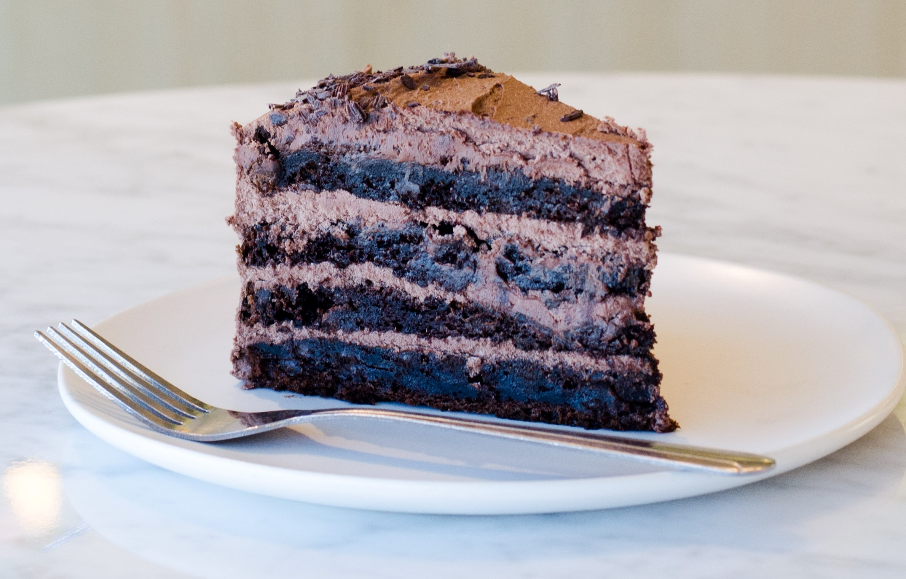

Cake Recipe

FiveStar Cake
Recipe
FiveStar Cake
×
Preparation Time : 1 Hour
Cooking Time : 4 Minutes
serves : 4-5 People
Ingredients:
1 cup Flour, 1/4 cup Cocoa Powder, 1 tsp Baking Powder, a pinch of Salt, 1 cup Buttermilk, 1 cup Sugar, 1/2 tsp Baking Soda, 1 tsp Vanilla Essence, 1/4 cup refined Vegetable Oil, 2 tbsp Sugar, 1 cup Water, 1 cup chopped Dark Chocolate, 1 cup Cream, 2 tbsp Butter, 15 fivestar, 4 large Packs Gems
Method:
1. Sieve together the flour, salt, baking powder and the cocoa powder.
2. Mix the sugar and the buttermilk. Add the baking soda, mix well and let stand for 5 minutes.
4. Add in the vanilla essence and mix the wet ingredients into the dry ingredients to make a smooth consistent batter.
5. Add in the oil and mix well.
6. Pour into the baking tin and microwave for 4 minutes.
7. Allow the cake to cool down completely.
8. Melt together the dark chocolate and the cream. Mix together till smooth and glossy add the butter and mix in well.
9. Set the ganache aside for 30 minutes.
10. Cut the cake into 2 slices.
11. Sprinkle sugar syrup on one slice. Spread the ganache on the cake slice.
12. Cover with the second cake slice. Sprinkle sugar syrup on the slice. Cover the entire cake with a layer of Ganache.
13. Arrange the Fivestar on the side to cover the entire side.
14. Fill the centre with Gems taking care to fill the entire cavity.
15. Tie a ribbon around the cake to serve.
Mother's Day Special Cake
Recipe
Mother's Day Special Cake
×
Ingredients:
2 tablespoons chopped dark chocolate, 1½ cups refined flour (maida) + for dusting, 60 grams butter + for greasing, 1 cup powdered sugar, 2 eggs,1 teaspoon baking powder, 1 teaspoon soda bicarbonate, A pinch of salt, 1 teaspoon vanilla essence, ½ teaspoon lemon juice, ½ cup milk, Ganache, 1 cup fresh cream, 1 cup chopped dark chocolate
Method:
1. Preheat oven to 180° C.
2. Cream together ½ cup butter and powdered sugar in a bowl using an electric beater.
3. Take chopped dark chocolate in a microwave proof bowl. Put the bowl into the microwave and heat for 1 minute. Remove from heat and mix till chocolate melts.
4. Break eggs into the butter-cream mixture and whisk well. Add melted dark chocolate and mix well.
5. Sift together 1½ cups flour, baking powder, soda bicarbonate and salt into the butter cream mixture and fold well.
6. Add vanilla essence and lemon juice and mix. Add milk and mix well to make a smooth batter.
7. Grease a round spring bottom tin with some butter and dust with some flour. Pour in the batter, level it out and tap.
8. Put the tin into the preheated oven and bake for 25-30 minutes. Remove from oven, cool and demould.
9. To prepare ganache, boil cream in a non-stick pan.
10. Take dark chocolate in a microwave proof bowl. Add hot cream and mix well till the chocolate melts.
11. Cut the cake horizontally into 4 equal slices and trim the above layer to get a flat surface.
12. Divide the ganache into 4 equal portions and spread one portion on one slice using a palate knife. Repeat the process with remaining portion of ganache and cake slices.
13. Heat remaining ganache in the microwave for 10-15 seconds and pour it on top of the layered cake and spread over the cake using a palate knife.
14. Cut into wedges and serve.
Mango Cake
Recipe
Mango Cake
×
Prep time: 10-15 minutes
Cooking time: 30-35 minutes
Serves: 1 cake
Setting time: 5-6 hours or overnight
Ingredients:
Full fat milk 1.5 litre, Fresh cream 250 ml, Lemon juice 1.5 tbsp, Salt ½ tsp
Method:
1. Heat milk in a heavy bottom vessel on medium heat, stir in regular intervals and bring to a boil, once the milk starts to boil switch off the flame and add the lemon juice gradually, stir until the milk starts to curdle and the whey separated from the milk solids.
2. Now, place a sieve and a muslin cloth, and strain, wash it with fresh water to remove the sourness of the lemon.
3. Further squeeze out the excess moisture and let it sit for 5 minutes.
4.Transfer the curdled milk in a blending jar, add salt and blend until smooth and creamy in texture. Your homemade cream cheese is ready! you can store it in the jar, refrigerate and use accordingly.
Pull Me Up Cake
Recipe
Pull Me Up Cake
×
Prep time: 10-15 minutes
Cooking time: 30-35 minutes
Serves: 1 cake
Setting time: 5-6 hours or overnight
Ingredients:
Dry ingredients :
1 cup all-purpose flour, 1/4 cup chocolate powder, 1 tsp baking powder, 1/2 tsp baking soda, 1 pinch salt, 1/2 cup chopped Walnut
Wet ingredients :
1/2 cup powdered sugar, 1/2 cup oil, 1 tbsp vanilla essence,
For ganache :
2 cup chopped dark chocolate. 11/2 cup fresh cream, 1/4 cup milk
For garnishing :
handful walnuts, 1/4 cup Rice crispy, as needed Cherry, 250 gm Readymade whipped cream
Method:
1.Take a bowl add wet ingredients and mix until it's fluffy.
2.Then take a bowl and sieve all dry ingredients (except walnut) and keep aside. Then add little by little dry ingredients mix and milk into the wet ingredients mix it well very lightly.
3.Once its done add chopped Walnut and mix it well.
4.Now grease the cake tin and put the butter paper in it. When you nicely grease the tin put the batter in it and tap it for one to two times so that the air bubbles removes. Then bake it on preheated oven at 180° for 40 minutes.
5.Take a pan and add milk and fresh cream. Stir continuously. Once it's start to boil add dark chocolate and mix it well make sure that there is no lumps. Your ganache is ready.
6.When cake is done allow to cool down completely. Then cut into the slices. Now take the first slice and then spray sugar syrup on it the applyp whipped cream and spread nicely. Add Choco chip and chopped Walnut and cover it with another slice of cake. Then cover the whole cake with whipped cream nicely.
7.Now roll the OHP sheet across the cake as a collar and stick it's edge with the help of clear tape. Now pour the chocolate ganache in it then add all garnishing ingredients on it. Your pull me up cake is ready.
8.When you want to eat it, raise its collar upwards.
Cheese Cake
Recipe
Cheese Cake
×
Ingredients:
Biscuit 150 gm, Melted butter 80 gm, Gelatine 7 gm + water 50 ml, Homemade cream cheese 375 gm, Fresh cream 250 ml, Powdered sugar ½ cup, Vanilla extract ½ tsp, White chocolate 150 gm, Fresh mango puree 200 gm, Lemon juice 1 tbsp, Zest of 1 lemon, Mango slices (for garnish)
Method:
1. Start by first crushing the biscuit, you can use a zip lock bag or else you can use a clean and fresh cloth or even a grinding jar to crush the biscuit, add melted butter and mix well.
2. Transfer the butter and biscuit mixture in the spring form mould and press it with a pav bhaji masher a glass bottom, to even the surface, press nicely to make the base of the cheese cake. Refrigerate to set until you make the cheese cake filling.
3. Now, take a small bowl, add gelatine and water, mix and rest the gelatine to bloom, by the time you can make the cheese cake filling.
4. Now, to make the filling, take a mixing bowl, add homemade cream cheese, fresh cream, powdered sugar and vanilla extract, whisk with an electric beater until its fluffy.
5. Set a double boiler and melt the white chocolate, you can also melt the chocolate in a microwave, add the melted chocolate in the mixture and whisk with electric beater until combined well.
6. Now, add the fresh mango puree, lemon juice and lemon zest, whisk again until combine well.
7. Now, heat the bloomed gelatine in microwave for 15 seconds and add 2 spoonful of cream cheese mixture in the heated gelatine and mix well. Further add this mixture back to the cream cheese filling and mix well. Transfer the cream cheese filling mixture in the spring form mould and set in the refrigerator for 5-6 hours.
8. Once the cheese cake is set after refrigerating, take it from mould and garish with mango slice, your mango cream cheese is ready, serve chilled.